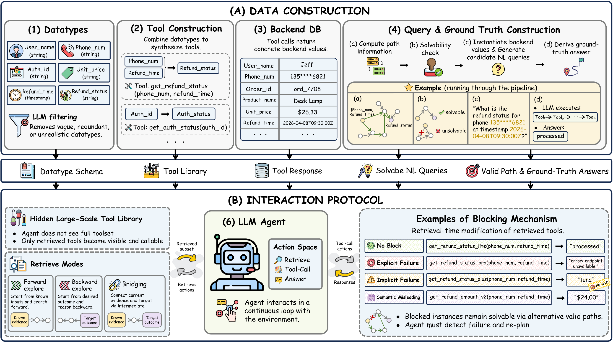

Partial tool visibility
Agents act through retrieval rather than over a globally visible tool list.
Evaluating Long-Horizon Planning of LLM Tool-Use Agents in Large-Scale Tool Ecosystems
LLM agents increasingly operate in large tool ecosystems, where real-world tasks require discovering relevant tools, inferring implicit sub-goals, and adapting to dynamic environments over long horizons. However, existing benchmarks rarely evaluate planning under retrieval-limited tool visibility.
To address this gap, we introduce PlanBench-XL, an interactive benchmark of 327 retail tasks over 1,665 tools that tests whether agents can iteratively retrieve usable tools, invoke them to uncover intermediate evidence for subsequent calls toward the final goal. PlanBench-XL further features an optional blocking mechanism that simulates real-world unpredictability through missing, failing, or distracting tool functions, forcing agents to detect disrupted paths and adapt at runtime.
These results establish PlanBench-XL as a testbed for diagnosing agentic planning failures and highlight the need for robust adaptive planning in long-horizon tasks with large, imperfect tool environments.
Agents act through retrieval rather than over a globally visible tool list.
Queries require chaining multiple tools and inferring hidden intermediate sub-goals.
Blocked and misleading tools test whether agents can detect failure signals and re-plan.

Tools are defined over domain datatypes, making tool affordances explicit and searchable. The current repo snapshot already supports a substantial baseline inventory for browsing and filtering.
Each query unfolds as a multi-turn loop: the agent retrieves candidate tools, executes structured tool calls, and eventually returns a final answer under a visible step budget.
The blocked setting replaces critical path tools with explicit failures, implicit failures, or semantically misleading alternatives while preserving at least one feasible path.
| Rank | Model Name | Task Completion | Exploration Behavior | Execution Quality | ||||
|---|---|---|---|---|---|---|---|---|
| Accuracy (%) ↑ | EGT Prec. (%) ↑ | Avg. Turns | Mean EDT | S/C Ratio | ITCR (%) ↓ | UIRR (%) ↓ | ||
Frontier models achieve the strongest performance while maintaining high execution relevance. Most other models remain substantially weaker, showing the difficulty of long-horizon, exploration-driven planning across large tool ecosystems. The gaps also appear within model families, where larger variants outperform smaller ones and full frontier models exceed their lightweight versions. Overall, both model family and scale matter for this task.
Broad retrieval can expose agents to more potential intermediate information, making exploration tendency strongly associated with task success. Across models, agents that uncover more intermediate information are generally more likely to complete the task successfully. However, broad retrieval remains only one part of effective long-horizon tool use, since success also depends on whether agents can use the discovered information correctly.
A high Search-to-Call Ratio and a large number of interaction turns indicate that an agent spends substantial effort on retrieval, but such effort does not necessarily translate into broad discovery of useful intermediate information. Frequent searching and long interactions are not sufficient for effective exploration. An agent may search proactively, but if these searches repeatedly revisit unuseful or uninformative tools, they contribute little to the discovery of new task-relevant datatypes.
Across models, agents generally issue more input-conditioned retrievals, indicating a common preference for forward anticipation. However, retrieving tools compatible with available inputs is often insufficient. Agents may find executable next steps but fail to reason backward about which intermediate datatypes are needed to reach the final goal. Effective tool discovery therefore requires combining forward exploration from current evidence with backward anticipation from the desired outcome.
EGT Precision captures whether executed tool calls stay on task-relevant paths. Models are much more likely to succeed when they execute relevant tool-use trajectories. The strongest models further support this pattern by attaining both high accuracy and high execution relevance. These results suggest that effective long-horizon tool use requires not only sufficient exploration, but also precise execution over the explored tool space.
Models that frequently make invalid tool calls are much less likely to complete the task successfully. Effective long-horizon tool use requires not only broad exploration and accurate exploitation, but also basic reliability in invoking tools with valid arguments. Invalid tool calls alone do not explain performance differences, and failures also arise from ineffective exploration and exploitation.
Real samples from the benchmark — click a tab to switch the view.
If you find PlanBench-XL helpful, please kindly cite as:
@misc{liu2026planbenchxlevaluatinglonghorizonplanning,
title={PlanBench-XL: Evaluating Long-Horizon Planning of LLM Tool-Use Agents in Large-Scale Tool Ecosystems},
author={Jiayu Liu and Qihan Lin and Cheng Qian and Rui Wang and Emre Can Acikgoz and Xiaocheng Yang and Jiateng Liu and Zhenhailong Wang and Xiusi Chen and Heng Ji and Dilek Hakkani-Tür},
year={2026},
eprint={2606.22388},
archivePrefix={arXiv},
primaryClass={cs.AI},
url={https://arxiv.org/abs/2606.22388},
}